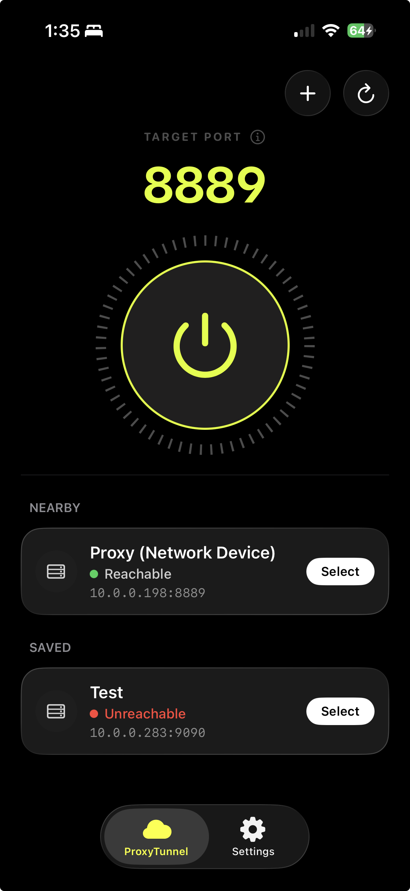
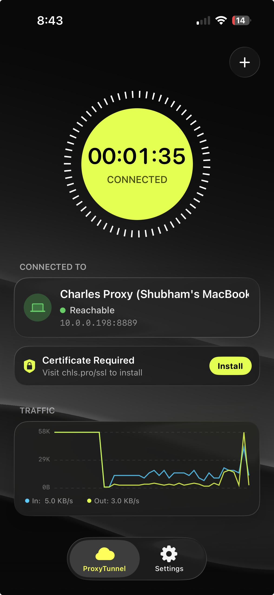
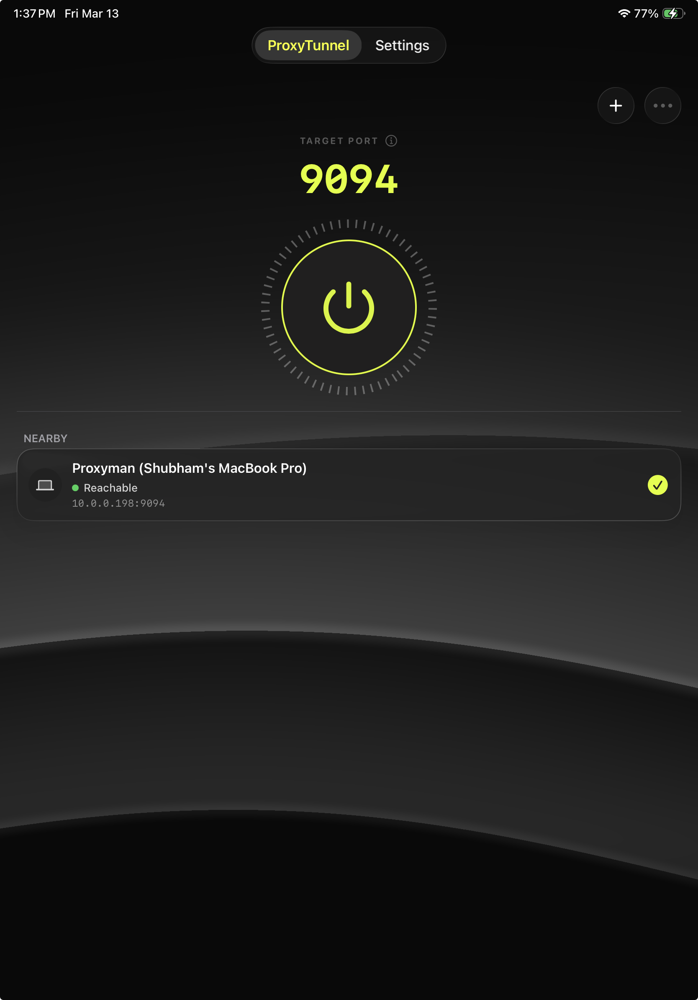
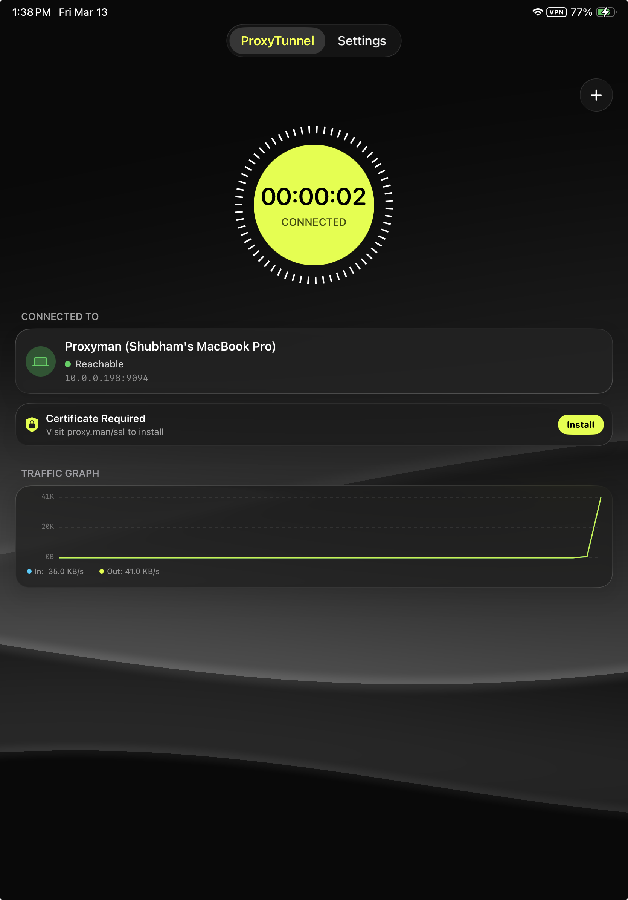

Detect any proxy on your local network, switch it on with one tap, and watch the traffic flow — no clunky settings menus, no VPN profiles to babysit.




SSDP-based scanning finds proxy servers on your network automatically. No IP entry.
Flip between Proxyman, Charles, and custom proxies without leaving the app.
Real-time download/upload sparklines so you always know the tunnel is alive.
Bookmark proxies for staging, development, and production. Switch in seconds.
No analytics, no accounts, no data sent anywhere. Everything stays on-device.
Custom accent colors — from the default acid yellow to any color you prefer.
ProxyTunnel runs entirely on your device. No sign-in, no telemetry, no cloud — just your proxy, your device, your control. Read the full policy →